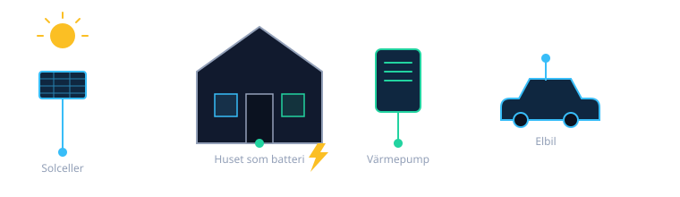

EnergyWizard är ett självbyggt, öppet styrsystem för hemmet: minut-för-minut-beslut om värme, varmvatten, elbilsladdning och solöverskott, byggt på en prioritetsmotor och validerat mot månader av verklig drift - inte en svart låda med påstådda procentsatser.

Har du en smart värmepump, solceller, hembatteri eller elbil - eller en kombination av dem? Vi bygger EnergyWizard Open tillsammans med riktiga hus, inte bara i teorin.
Ingen generisk kalkylator - det här är vad systemet faktiskt har sparat, mätt mot vad samma el hade kostat till dygnets snittpris. Uppdateras automatiskt varje natt. Läs varför vi gör det så här.
Artiklar grundade i den riktiga koden - ingen marknadstext utan underlag.